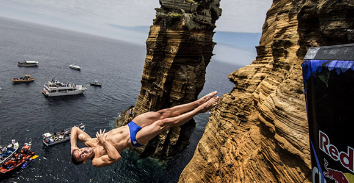
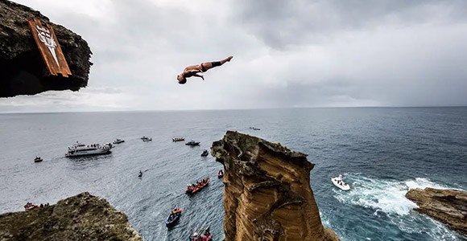
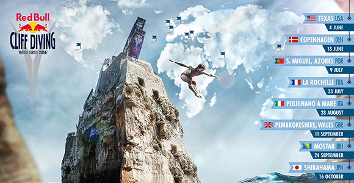

За спорта
Високо гмуркане е гмуркане във вода от голяма височина до 28 метра.
Олимписката дисциплина Скоковете във вода, се изпълняава до височина 10 метра.
Високо гмуркане e приключенски спорт (както при гмуркането от скали),
има много опити за рекорди.High Diving дебютира на събитие на FINA на Световното първенство по водни спортове през 2013 г. в Барселона, след като спортът беше добавен към списъка с дисциплини на федерацията.
В световните първенства мъжете скачат от платформа с височина 27 метра (89 фута), а жените скачат от платформа с височина 20 метра (66 фута).
|  |
|  |
История
Гмуркането в скали е документирано още през 1770 г., когато Кахекили II, крал на Мауи, се занимава с практика, наречена „lele kawa“,
което на английски означава скачане с крака напред във вода от голяма височина, без да се пръска. Воините на краля бяха принудени да участват,
за да докажат, че са смели и лоялни към краля. Практиката по-късно се превърна в състезание при крал Камехамеха I,
а гмуркачите бяха оценявани по техния стил и количество пръски при влизане във водата.
|
Световни рекорди
1. Dave Lindsay през 1982 година (170 ft)
2. Rick Winters през Март, 1983 година (172 ft)
3. Rick Charls през Март, 1983 година (172 ft)
4. Dana Kunze през Март, 1983 година (172 ft)
5. Bruce Boccia през Март, 1983 година (172 ft)
6. Mike Foley през Март, 1983 година (172 ft)
7. Randy Dickison през 7 Април, 1985 година (174 ft 8 in)
8. Olivier Favre през 30 Август, 1987 година (177 ft)
9. Rudolf Bok през 28 Септември, 1997 година (191 ft)
10. Laso Schaller през 4 Август, 2015 година (192 ft 10 in)
|
 |